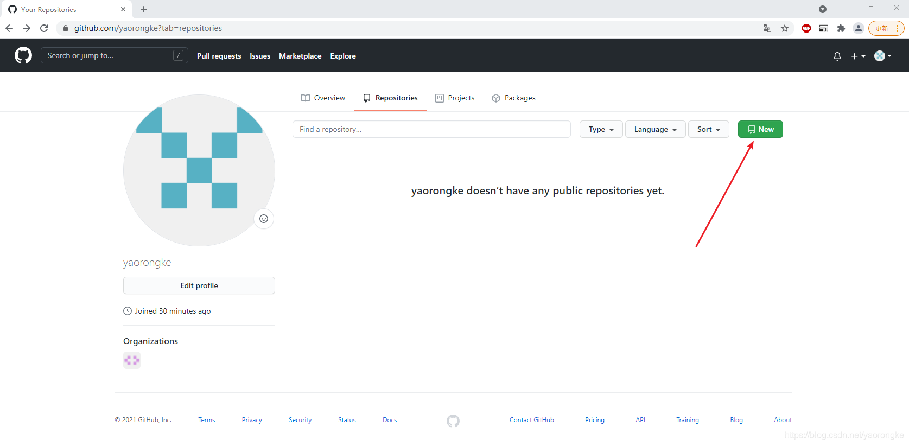
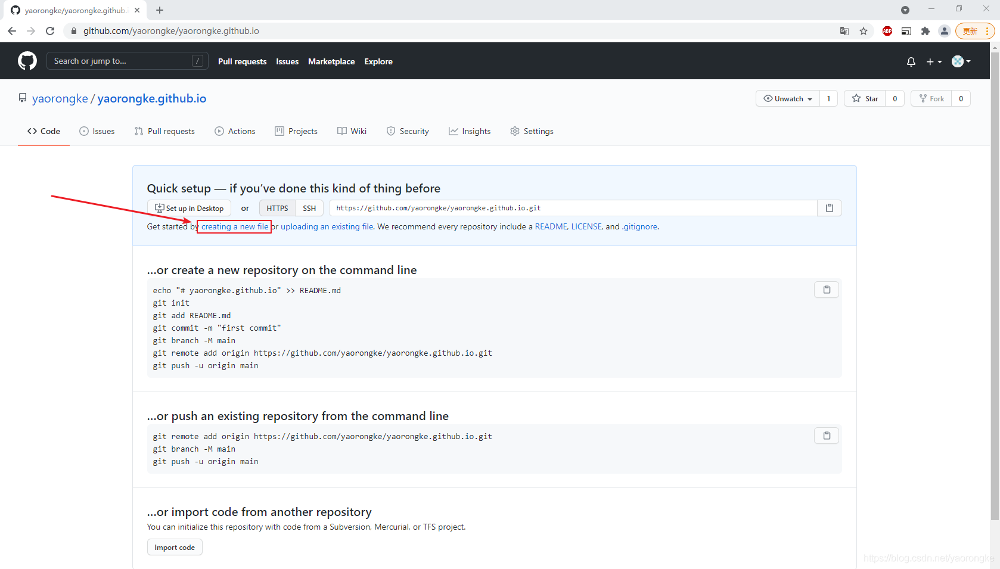

hexo + GithubPage 搭建博客历程回顾1
hexo+GithubPage博客历程回顾1
使用 GitHub Pages 来搭建 Hexo 静态博客网站，其最吸引人的莫过于完全免费使用，并且非常稳定。虽然搭建时比较麻烦，有点折腾，但是配置完成后，基本不需要操心维护的事，甚至放了几年都忘记了，打开来看文章依然还在。
本文回顾一下整个搭建历程，并做个总结。
首先
1、Github
没有账号的需要注册个账号，进不去网址或者访问慢的话可以用这个工具FastGithub（FastGithub 是一款 github 加速工具，可以解决 github 打不开、用户头像无法加载、releases 无法上传下载、git-clone、git-pull、git-push 失败等问题。项目地址）
①注册GitHub方法步骤
②创建仓库&GitHub Pages 搭建
在GitHub上创建一个新的代码仓库用于保存我们的网页。
点击Your repositories，进入仓库页面。
点击New按钮，进入仓库创建页面。

填写仓库名，格式必须为<用户名>.github.io，然后点击Create repository。
点击creating a new file创建一个新文件，作为我们网站的主页。

新文件的名字必须为index.html，内容先随便写一个简单的，内容示例如下，填写之后点击Commit new file提交。
1 | <!DOCTYPE html> |